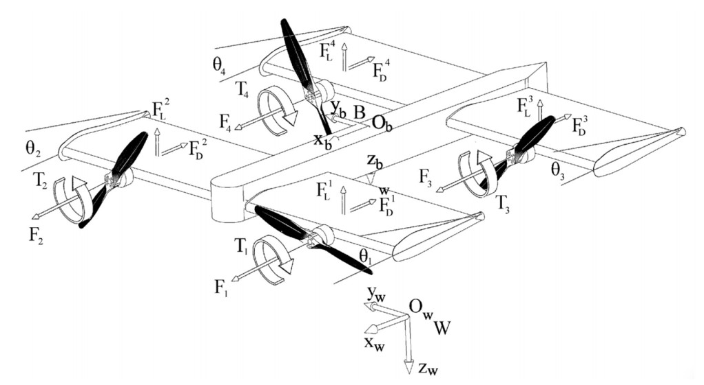
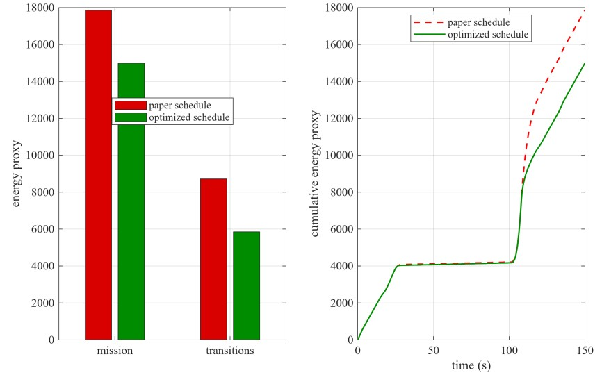
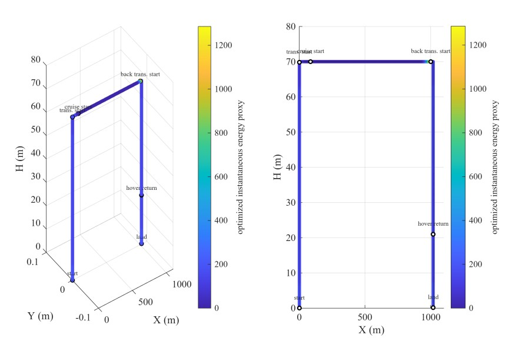
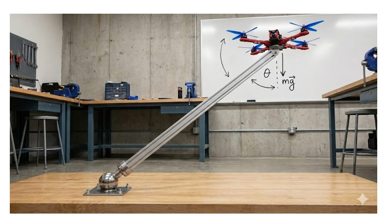
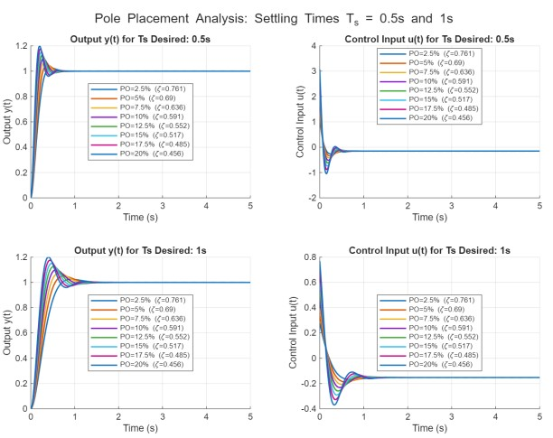
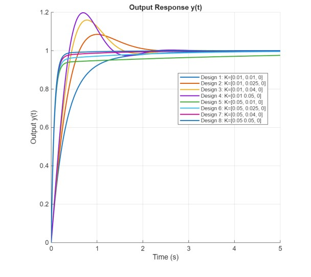
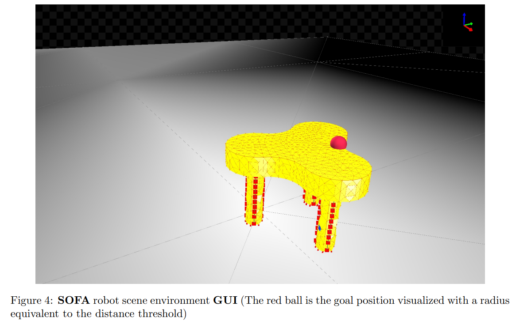
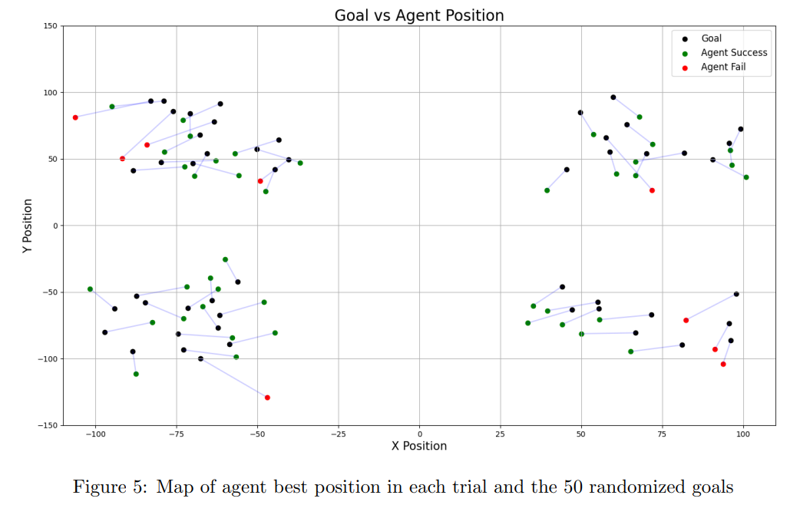
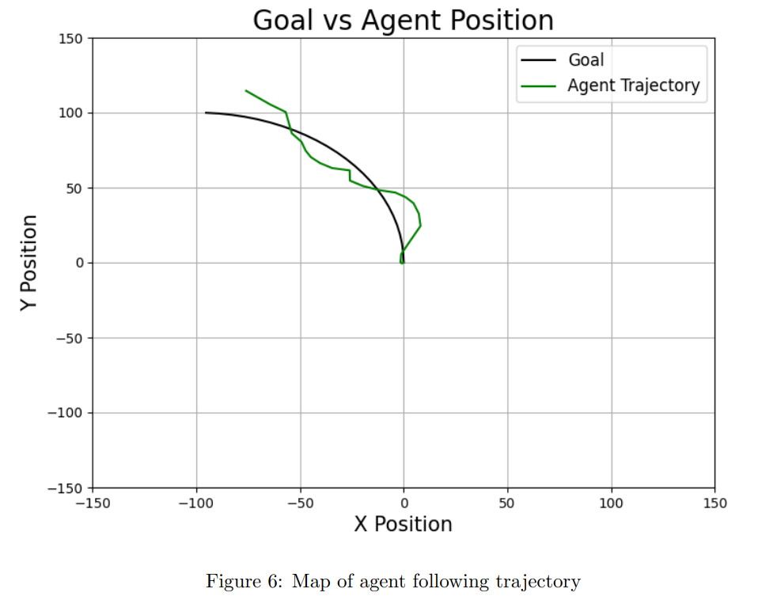

Ongoing Projects
Multi-Manual Object Manipulation Using Fully-Actuated Hexarotors
Abstract:
Conventional multirotor aerial vehicles are widely used because of their mechanical simplicity, agility, and vertical take-off and landing capability. However, standard multirotors are underactuated: their thrust is mainly generated along one body-fixed direction, so lateral motion requires tilting the entire vehicle. This coupling between translation and attitude limits their ability to perform tasks that require precise force generation, contact interaction, or cooperative manipulation. Fully actuated hexarotors address this limitation by using tilted rotor configurations that allow the vehicle to generate forces and moments more independently. This makes them suitable for aerial manipulation tasks in which the robot must regulate its pose while also applying interaction forces to an object. The problem considered in this project is multi-robot object manipulation using two fully actuated hexarotors. The objective is to control two aerial vehicles operating in the same Isaac Sim environment so that they can stabilize, track trajectories, and perform manipulation-inspired motion around a rigid box payload.
Energy-Optimal Tilt-Angle Scheduling Extension for a Quad Tilt-Wing UAV
Abstract:
This report presents an extension to the real-time optimal control framework for a quad-tilt-wing (QTW) unmanned aerial vehicle by introducing an energy-optimal tilt-angle scheduling strategy. The original SDRE-LQR control architecture and predefined trajectory are preserved, while the wing tilt profile during transition phases is optimized to reduce motor energy consumption. A trajectory-level energy proxy based on motor thrust is minimized under physical and operational constraints. Simulation results demonstrate approximately 16% reduction in total mission energy and more than 30% reduction during transition phases, without degrading trajectory tracking accuracy or system stability. These results highlight the importance of transition-phase optimization in improving the overall efficiency of QTW UAVs.



Assistive Hybrid Wheeled-Legged Wheelchair
Abstract:
Millions of wheelchair users worldwide still face limited mobility on everyday terrains such as stairs, curbs, grass, mud, snow, and sand, where conventional powered wheelchairs typically fail and require bystander assistance. This project presents a standards-aware, hybrid wheeled-legged wheelchair that aims to provide fully independent, all-terrain navigation while maintaining high user comfort and safety. The platform integrates a 6-DOF leg-wheel mechanism, a ball-and-plate seat-leveling module, ISO 7176-5-compliant dimensions, and a comprehensive sensor suite enabling robust perception and stability control. A complete CAD-to-URDF modeling pipeline and PyBullet simulation framework were developed to evaluate the system in ISO-defined maneuvering layouts, where teleoperated trials confirmed successful corridor traversal, doorway entry, tight-angle turning, and reversing within realistic accessibility constraints. Two reinforcement-learning controllers were implemented: a PPO-based seat-stabilization agent that achieved near-perfect tilt compensation and smooth motion satisfying ISO 2631-1 comfort limits, and a flat-ground To-Goal maneuverability agent forming the foundation of a future Mixture-of-Experts architecture for terrain-specific autonomous locomotion. Additionally, manually demonstrated gait sequences across six terrain types verified the mechanism's ability to perform rolling, stepping, crawling, and stair negotiation motions. Together, these contributions demonstrate a highly promising mobility platform that substantially exceeds the capabilities of existing powered wheelchairs and represents a viable pathway toward safe, comfortable, and fully autonomous all-terrain mobility without the need for bystander assistance. *Part of this work has been submitted to The 2nd International Conference on Smart Mobility and Logistics Ecosystems (SMiLE) February 9-11, 2026, KFUPM, Saudi Arabia.
Noise Resilient Identified ARX model optimized with GA of a 4 DOF Quadcopter at Hovering mode
Abstract:
Quadcopter system identification has gained significant attention in recent years, as researchers seek robust models capable of generalizing to unseen flight conditions. In this work, a simple auto-regressive exogenous (ARX) model is employed to identify a four-degree-of-freedom (DOF) quadcopter using an open-source AscTec Pelican flight dataset. The proposed approach does not rely on prior knowledge of unmanned aerial vehicle (UAV) dynamics. Prior to model identification, the raw flight data undergo essential preprocessing steps, including signal filtering and dataset segmentation, to ensure data quality and consistency. A multi-input single-output (MISO) ARX structure is subsequently optimized using a genetic algorithm (GA) to enhance identification performance. Since system identification models are prone to degradation when exposed to unseen data and measurement noise, the developed model is evaluated using previously unseen flight data under a signal-to-noise ratio (SNR) of 30 dB. The results demonstrate that the proposed model is noise-resilient and suitable for real-world hardware deployment.


Mathematical Modelling and Control of a 3DOF Quadcopter in an Unstable Configuration
Abstract:
This project investigates the modelling and control of a 3-DOF quadcopter mounted as an inverted-pendulumtype rig, free to rotate in roll, pitch, and yaw. Starting from rigid-body rotational dynamics, a nonlinear MIMO model is derived and linearized around the inverted equilibrium, leading to a 6-state, 3-input, 3-output state-space representation. Due to symmetry, roll and pitch share identical second-order dynamics with one unstable pole each, while the yaw axis is described by a stable first-order model. These properties are confirmed through transferfunction derivation, root-locus analysis, and open-loop time responses. For each axis, controllable, observer, and diagonal canonical forms are obtained and validated via similarity transformations, showing full controllability and observability of the system. On this basis, several controllers are designed and compared: PID controllers for the unstable roll and pitch angles, state-feedback pole-placement and LQR regulators for the same axes, and a PI controller for the yaw channel. Extensive simulations in MATLAB/Simulink are used to evaluate overshoot, settling time, rise time, and control effort for multiple gain sets. The study demonstrates that appropriate feedback control can robustly stabilize the inherently unstable roll and pitch motions while improving yaw performance, and it identifies controller configurations that achieve a practical trade-off between fast response and reasonable actuator effort.



Abstract:
Rigid robots were extensively researched, whereas soft robotics remains an underexplored field. Utilizing softlegged robots in performing tasks as a replacement for human beings is an important stride to take, especially under harsh and hazardous conditions over rough terrain environments. For the demand to teach any robot how to behave in different scenarios, a real-time physical and visual simulation is essential. When it comes to soft robots specifically, a simulation framework is still an arduous problem that needs to be disclosed. Using the simulation open framework architecture (SOFA) is an advantageous step. However, neither SOFA’s manual nor prior public SOFA projects show its maximum capabilities the users can reach. So, we resolved this by establishing customized settings and handling the framework components appropriately. Settling on perfect, fine-tuned SOFA parameters has stimulated our motivation towards implementing the state-of-theart (SOTA) reinforcement learning (RL) method of proximal policy optimization (PPO). The final representation is a welldefined, ready-to-deploy walking, tripedal, soft-legged robot based on PPO-RL in a SOFA environment. Robot navigation performance is a key metric to be considered for measuring the success resolution. Although in the simulated soft robots case, an 82% success rate in reaching a single goal is a groundbreaking output, we pushed the boundaries to further steps by evaluating the progress under assigning a sequence of goals. While trailing the platform steps, outperforming discovery has been observed with an accumulative squared error deviation of 19 mm.


